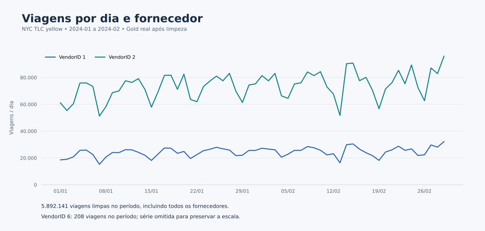

Estudo de caso / Demonstração técnica
Quase 6 milhões de viagens, e a origem de cada linha removida.
Um lakehouse com Spark e Delta Lake sobre os dados públicos de táxi de Nova York, construído para mostrar como um pipeline pode explicar os próprios números.
- Tipo
- Demonstração técnica
- Dados
- NYC TLC, jan. e fev. de 2024
- Execução
- Local, registrada
- Código
- GitHub
01 / Problema
Um número só merece confiança quando dá para refazer a conta.
Em muitas empresas, a diferença entre o total de um sistema e o total de um relatório some em filtros que ninguém documentou. Esta demonstração usa um conjunto público grande e imperfeito para mostrar o oposto: cada linha que sai do fluxo é contada e associada à regra que a removeu.
02 / Arquitetura
Três camadas e um conjunto de controles.
Fluxo mensalSelecione uma camada
03 / Execução registrada
O balanço fecha, mês a mês.
| Mês | Bronze | Silver | Removidas | Gold |
|---|---|---|---|---|
| Janeiro/2024 | 2.964.606 | 2.926.167 | 38.439 | 85 |
| Fevereiro/2024 | 3.007.511 | 2.965.974 | 41.537 | 58 |
| Regra | Janeiro | Fevereiro |
|---|---|---|
| Tarifa negativa ou ausente | 37.443 | 40.653 |
| Duração não positiva | 870 | 803 |
| Viagem duplicada | 126 | 81 |

04 / Leitura do drift
Um alerta que tem explicação.
A comparação entre os meses gerou um alerta: a camada Gold caiu de 85 para 58 linhas. O motivo aparece nos próprios dados. Janeiro tem 31 dias com dois fornecedores principais e mais 23 linhas de um terceiro fornecedor, que registrou 208 viagens no mês e não aparece em fevereiro. Fevereiro tem 29 dias, com os dois fornecedores principais.
O alerta não é um erro do pipeline. É o pipeline avisando que a forma dos dados mudou, para que alguém confirme antes de usar o número.
Limites desta demonstração
- Execução local com dados públicos; não representa operação em produção nem resultados de clientes.
- O recorte cobre dois meses do arquivo de táxis amarelos.
- O código e o registro da execução estão no repositório público, no commit
300c16c.